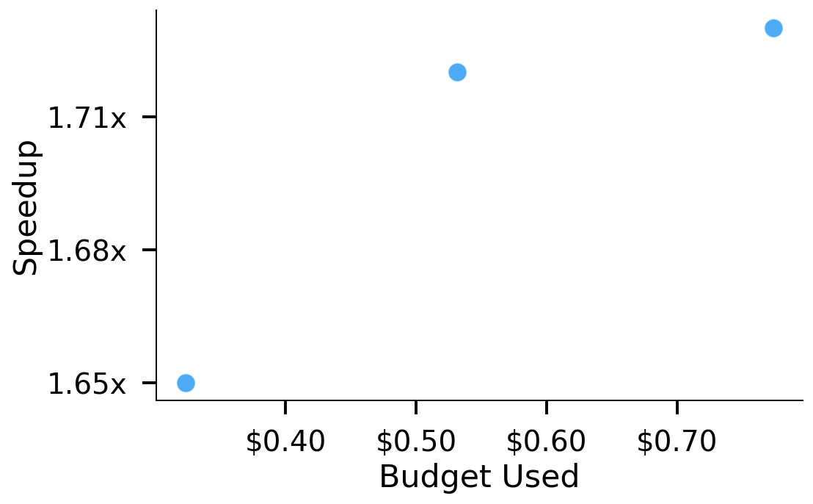
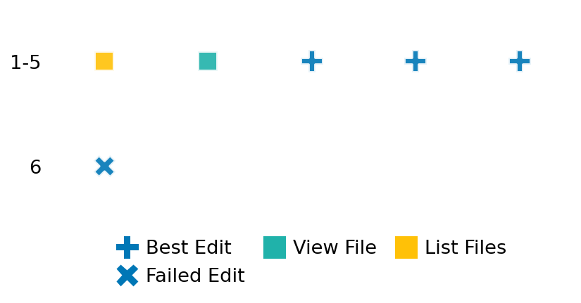

SETTING:
You're an autonomous programmer tasked with solving a specific problem. You are to use the commands defined below to accomplish this task. Every message you send incurs a cost—you will be informed of your usage and remaining budget by the system.
You will be evaluated based on the best-performing piece of code you produce, even if the final code doesn't work or compile (as long as it worked at some point and achieved a score, you will be eligible).
Apart from the default Python packages, you have access to the following additional packages:
- cryptography
- cvxpy
- cython
- dace
- dask
- diffrax
- ecos
- faiss-cpu
- hdbscan
- highspy
- jax
- networkx
- numba
- numpy
- ortools
- pandas
- pot
- psutil
- pulp
- pyomo
- python-sat
- pythran
- scikit-learn
- scipy
- sympy
- torch
YOUR TASK:
Your objective is to define a class named `Solver` in `solver.py` with a method:
```
class Solver:
def solve(self, problem, **kwargs) -> Any:
"""Your implementation goes here."""
...
```
IMPORTANT: Compilation time of your init function will not count towards your function's runtime.
This `solve` function will be the entrypoint called by the evaluation harness. Strive to align your class and method implementation as closely as possible with the desired performance criteria.
For each instance, your function can run for at most 10x the reference runtime for that instance. Strive to have your implementation run as fast as possible, while returning the same output as the reference function (for the same given input). Be creative and optimize your approach!
Your messages should include a short thought about what you should do, followed by a _SINGLE_ command. The command must be enclosed within ``` and ```, like so:
<Reasoning behind executing the command>
```
<command>
```
IMPORTANT: Each set of triple backticks (```) must always be on their own line, without any other words or anything else on that line.
Here are the commands available to you. Ensure you include one and only one of the following commands in each of your responses:
- `edit`: Replace a range of lines with new content in a file. This is how you can create files: if the file does not exist, it will be created. Here is an example:
```
edit
file: <file_name>
lines: <start_line>-<end_line>
---
<new_content>
---
```
The command will:
1. Delete the lines from <start_line> to <end_line> (inclusive)
2. Insert <new_content> starting at <start_line>
3. If both <start_line> and <end_line> are 0, <new_content> will be prepended to the file
Example:
edit
file: solver.py
lines: 5-7
---
def improved_function():
print("Optimized solution")
---
- `ls`: List all files in the current working directory.
- `view_file <file_name> [start_line]`: Display 100 lines of `<file_name>` starting from `start_line` (defaults to line 1).
- `revert`: Revert the code to the best-performing version thus far.
- `reference <string>`: Query the reference solver with a problem and receive its solution. If the problem's input is a list, this command would look like:
```
reference [1,2,3,4]
```
- `eval_input <string>`: Run your current solver implementation on the given input. This is the only command that shows stdout from your solver along with both solutions. Example:
```
eval_input [1,2,3,4]
```
- `eval`: Run evaluation on the current solution and report the results.
- `delete`: Delete a range of lines from a file using the format:
```
delete
file: <file_name>
lines: <start_line>-<end_line>
The command will delete the lines from <start_line> to <end_line> (inclusive)
Example:
delete
file: solver.py
lines: 5-10
```
- `profile <filename.py> <input>`: Profile your currently loaded solve method's performance on a given input. Shows the 25 most time-consuming lines. Requires specifying a python file (e.g., `solver.py`) for validation, though profiling runs on the current in-memory code.
Example:
```
profile solver.py [1, 2, 3]
```
- `profile_lines <filename.py> <line_number1, line_number2, ...> <input>`: Profiles the chosen lines of the currently loaded code on the given input. Requires specifying a python file for validation.
Example:
```
profile_lines solver.py 1,2,3 [1, 2, 3]
```
**TIPS:**
After each edit, a linter will automatically run to ensure code quality. If there are critical linter errors, your changes will not be applied, and you will receive the linter's error message. Typically, linter errors arise from issues like improper indentation—ensure your edits maintain proper code formatting.
**Cython Compilation:** Edits creating or modifying Cython (`.pyx`) files will automatically trigger a compilation attempt (requires a `setup.py`). You will be notified if compilation succeeds or fails. If it fails, the edit to the `.pyx` file will be automatically reverted.
If the code runs successfully without errors, the in-memory 'last known good code' will be updated to the new version. Following successful edits, you will receive a summary of your `solve` function's performance compared to the reference.
If you get stuck, try reverting your code and restarting your train of thought.
Do not put an if __name__ == "__main__": block in your code, as it will not be ran (only the solve function will).
Keep trying to better your code until you run out of money. Do not stop beforehand!
**GOALS:**
Your primary objective is to optimize the `solve` function to run as as fast as possible, while returning the optimal solution.
You will receive better scores the quicker your solution runs, and you will be penalized for exceeding the time limit or returning non-optimal solutions.
Below you find the description of the task you will have to solve. Read it carefully and understand what the problem is and what your solver should do.
**TASK DESCRIPTION:**
Sparse Principal Component Analysis Task
This task involves finding sparse principal components that explain the maximum variance in the data while having a limited number of non-zero loadings. Standard Principal Component Analysis (PCA) often produces dense loadings that are difficult to interpret. Sparse PCA addresses this issue by inducing sparsity in the loadings, making the resulting components more interpretable while still capturing important patterns in the data.
The optimization problem is formulated as:
minimize ||B - X||_F^2 + λ ||X||_1
subject to ||X_i||_2 ≤ 1 for i=1,...,k
Where:
- B is derived from the eigendecomposition of the covariance matrix A
- X contains the k principal components (loadings)
- λ is the sparsity parameter that controls the trade-off between variance and sparsity
- The constraint ensures each component has unit norm
Input: A dictionary with keys:
- "covariance": A symmetric positive semidefinite matrix representing the data covariance (list of lists of float)
- "n_components": Number of sparse principal components to extract (int)
- "sparsity_param": Parameter controlling sparsity level; higher values lead to more sparsity (float)
Example input:
{
"covariance": [
[1.0, 0.5, 0.3],
[0.5, 1.0, 0.2],
[0.3, 0.2, 1.0]
],
"n_components": 2,
"sparsity_param": 0.1
}
Output: A dictionary with keys:
- "components": The sparse principal components, each column is a component (list of lists of float)
- "explained_variance": The variance explained by each component (list of float)
Example output:
{
"components": [
[0.8, 0.1],
[0.6, 0.0],
[0.0, 0.9]
],
"explained_variance": [1.45, 1.05]
}
Category: convex_optimization
Below is the reference implementation. Your function should run much quicker.
import cvxpy as cp
import numpy as np
| 01: def solve(self, problem: dict) -> dict:
| 02: """
| 03: Solve the sparse PCA problem.
| 04:
| 05: :param problem: Dictionary with problem parameters
| 06: :return: Dictionary with the sparse principal components
| 07:
| 08:
| 09: NOTE: Your solution must pass validation by:
| 10: 1. Returning correctly formatted output
| 11: 2. Having no NaN or infinity values
| 12: 3. Matching expected results within numerical tolerance
| 13: """
| 14: A = np.array(problem["covariance"])
| 15: n_components = int(problem["n_components"])
| 16: sparsity_param = float(problem["sparsity_param"])
| 17:
| 18: n = A.shape[0] # Dimension of the data
| 19:
| 20: # Decision variables
| 21: X = cp.Variable((n, n_components))
| 22:
| 23: # Use eigendecomposition-based approach for sparse PCA
| 24: # Minimize ||B - X||_F^2 + λ ||X||_1 where B contains principal components
| 25:
| 26: # Get the eigendecomposition of A
| 27: eigvals, eigvecs = np.linalg.eigh(A)
| 28:
| 29: # Keep only positive eigenvalues for PSD approximation
| 30: pos_indices = eigvals > 0
| 31: eigvals = eigvals[pos_indices]
| 32: eigvecs = eigvecs[:, pos_indices]
| 33:
| 34: # Sort in descending order
| 35: idx = np.argsort(eigvals)[::-1]
| 36: eigvals = eigvals[idx]
| 37: eigvecs = eigvecs[:, idx]
| 38:
| 39: # Use the top n_components eigenvectors scaled by sqrt(eigenvalues)
| 40: k = min(len(eigvals), n_components)
| 41: B = eigvecs[:, :k] * np.sqrt(eigvals[:k])
| 42:
| 43: # Objective: minimize ||B - X||_F^2 + λ ||X||_1
| 44: objective = cp.Minimize(cp.sum_squares(B - X) + sparsity_param * cp.norm1(X))
| 45:
| 46: # Constraints: each component has unit norm
| 47: constraints = [cp.norm(X[:, i]) <= 1 for i in range(n_components)]
| 48:
| 49: # Solve the problem
| 50: prob = cp.Problem(objective, constraints)
| 51: try:
| 52: prob.solve()
| 53:
| 54: if prob.status not in {cp.OPTIMAL, cp.OPTIMAL_INACCURATE} or X.value is None:
| 55: return {"components": [], "explained_variance": []}
| 56:
| 57: # Calculate explained variance for each component
| 58: components = X.value
| 59: explained_variance = []
| 60: for i in range(min(n_components, components.shape[1])):
| 61: var = components[:, i].T @ A @ components[:, i]
| 62: explained_variance.append(float(var))
| 63:
| 64: return {"components": components.tolist(), "explained_variance": explained_variance}
| 65:
| 66: except cp.SolverError as e:
| 67: return {"components": [], "explained_variance": []}
| 68: except Exception as e:
| 69: return {"components": [], "explained_variance": []}
| 70:
This function will be used to check if your solution is valid for a given problem. If it returns False, it means the solution is invalid:
import cvxpy as cp
import numpy as np
| 001: def is_solution( problem: dict, solution: dict) -> bool:
| 002: """
| 003: Verify if the solution is valid and optimal.
| 004:
| 005: :param problem: Dictionary with problem parameters
| 006: :param solution: Dictionary with the proposed solution
| 007: :return: True if the solution is valid and optimal, False otherwise
| 008: """
| 009: # Check for required keys
| 010: required_keys = {"components", "explained_variance"}
| 011: if not required_keys.issubset(solution.keys()):
| 012: logging.error(f"Solution missing required keys: {required_keys - solution.keys()}")
| 013: return False
| 014:
| 015: # Check for empty values (solver failure)
| 016: if isinstance(solution["components"], list) and not solution["components"]:
| 017: logging.error("Empty components value (solver likely failed).")
| 018: return False
| 019:
| 020: try:
| 021: # Extract problem data
| 022: A = np.array(problem["covariance"])
| 023: n_components = int(problem["n_components"])
| 024: sparsity_param = float(problem["sparsity_param"])
| 025:
| 026: # Extract solution data
| 027: components = np.array(solution["components"])
| 028: explained_variance = np.array(solution["explained_variance"])
| 029:
| 030: # Check dimensions
| 031: n = A.shape[0]
| 032: if components.shape != (n, n_components):
| 033: logging.error(
| 034: f"Components have incorrect shape: expected {(n, n_components)}, got {components.shape}"
| 035: )
| 036: return False
| 037:
| 038: if len(explained_variance) != n_components:
| 039: logging.error(
| 040: f"Explained variance has incorrect length: expected {n_components}, got {len(explained_variance)}"
| 041: )
| 042: return False
| 043:
| 044: # Check unit norm constraint
| 045: eps = 1e-5
| 046: for i in range(n_components):
| 047: norm = np.linalg.norm(components[:, i])
| 048: if norm > 1 + eps:
| 049: logging.error(f"Component {i} violates unit norm constraint: {norm} > 1")
| 050: return False
| 051:
| 052: # Check explained variance
| 053: for i in range(n_components):
| 054: comp = components[:, i]
| 055: var = comp.T @ A @ comp
| 056: if abs(var - explained_variance[i]) > eps * max(1, abs(var)):
| 057: logging.error(
| 058: f"Explained variance mismatch for component {i}: {var} != {explained_variance[i]}"
| 059: )
| 060: return False
| 061:
| 062: # Get reference solution
| 063: ref_solution = solve(problem)
| 064:
| 065: # Check if reference solution failed
| 066: if isinstance(ref_solution.get("components"), list) and not ref_solution.get(
| 067: "components"
| 068: ):
| 069: logging.warning("Reference solution failed; skipping optimality check.")
| 070: return True
| 071:
| 072: # Calculate objective values for the optimization problem
| 073: ref_components = np.array(ref_solution["components"])
| 074:
| 075: # Get eigendecomposition of covariance matrix
| 076: eigvals, eigvecs = np.linalg.eigh(A)
| 077: pos_indices = eigvals > 0
| 078: eigvals = eigvals[pos_indices]
| 079: eigvecs = eigvecs[:, pos_indices]
| 080: idx = np.argsort(eigvals)[::-1]
| 081: eigvals = eigvals[idx]
| 082: eigvecs = eigvecs[:, idx]
| 083: k = min(len(eigvals), n_components)
| 084: B = eigvecs[:, :k] * np.sqrt(eigvals[:k])
| 085:
| 086: # Calculate objective for reference and proposed solutions
| 087: ref_obj = np.sum((B - ref_components) ** 2) + sparsity_param * np.sum(
| 088: np.abs(ref_components)
| 089: )
| 090: sol_obj = np.sum((B - components) ** 2) + sparsity_param * np.sum(np.abs(components))
| 091:
| 092: # Check optimality with 1% tolerance
| 093: if sol_obj > ref_obj * 1.01:
| 094: logging.error(f"Sub-optimal solution: {sol_obj} > {ref_obj} * 1.01")
| 095: return False
| 096:
| 097: return True
| 098:
| 099: except Exception as e:
| 100: logging.error(f"Error when verifying solution: {e}")
| 101: return False
| 102:
 AlgoTuner Trajectory
AlgoTuner Trajectory
AlgoTune Task:
sparse_pca
Model:
Claude Opus 4
Speedup
1.740x
Total Budget
$1.00
Initial System Prompt
AlgoTune Task Description
Sparse Principal Component Analysis Task
This task involves finding sparse principal components that explain the maximum variance in the data while having a limited number of non-zero loadings. Standard Principal Component Analysis (PCA) often produces dense loadings that are difficult to interpret. Sparse PCA addresses this issue by inducing sparsity in the loadings, making the resulting components more interpretable while still capturing important patterns in the data.
The optimization problem is formulated as:
minimize ||B - X||_F^2 + λ ||X||_1
subject to ||X_i||_2 ≤ 1 for i=1,...,k
Where:
- B is derived from the eigendecomposition of the covariance matrix A
- X contains the k principal components (loadings)
- λ is the sparsity parameter that controls the trade-off between variance and sparsity
- The constraint ensures each component has unit norm
Input: A dictionary with keys:
- "covariance": A symmetric positive semidefinite matrix representing the data covariance (list of lists of float)
- "n_components": Number of sparse principal components to extract (int)
- "sparsity_param": Parameter controlling sparsity level; higher values lead to more sparsity (float)
Example input:
{
"covariance": [
[1.0, 0.5, 0.3],
[0.5, 1.0, 0.2],
[0.3, 0.2, 1.0]
],
"n_components": 2,
"sparsity_param": 0.1
}
Output: A dictionary with keys:
- "components": The sparse principal components, each column is a component (list of lists of float)
- "explained_variance": The variance explained by each component (list of float)
Example output:
{
"components": [
[0.8, 0.1],
[0.6, 0.0],
[0.0, 0.9]
],
"explained_variance": [1.45, 1.05]
}
Category: convex_optimization
Reference Implementation
import cvxpy as cp
import numpy as np
def solve(self, problem: dict) -> dict:
"""
Solve the sparse PCA problem.
:param problem: Dictionary with problem parameters
:return: Dictionary with the sparse principal components
NOTE: Your solution must pass validation by:
1. Returning correctly formatted output
2. Having no NaN or infinity values
3. Matching expected results within numerical tolerance
"""
A = np.array(problem["covariance"])
n_components = int(problem["n_components"])
sparsity_param = float(problem["sparsity_param"])
n = A.shape[0] # Dimension of the data
# Decision variables
X = cp.Variable((n, n_components))
# Use eigendecomposition-based approach for sparse PCA
# Minimize ||B - X||_F^2 + λ ||X||_1 where B contains principal components
# Get the eigendecomposition of A
eigvals, eigvecs = np.linalg.eigh(A)
# Keep only positive eigenvalues for PSD approximation
pos_indices = eigvals > 0
eigvals = eigvals[pos_indices]
eigvecs = eigvecs[:, pos_indices]
# Sort in descending order
idx = np.argsort(eigvals)[::-1]
eigvals = eigvals[idx]
eigvecs = eigvecs[:, idx]
# Use the top n_components eigenvectors scaled by sqrt(eigenvalues)
k = min(len(eigvals), n_components)
B = eigvecs[:, :k] * np.sqrt(eigvals[:k])
# Objective: minimize ||B - X||_F^2 + λ ||X||_1
objective = cp.Minimize(cp.sum_squares(B - X) + sparsity_param * cp.norm1(X))
# Constraints: each component has unit norm
constraints = [cp.norm(X[:, i]) <= 1 for i in range(n_components)]
# Solve the problem
prob = cp.Problem(objective, constraints)
try:
prob.solve()
if prob.status not in {cp.OPTIMAL, cp.OPTIMAL_INACCURATE} or X.value is None:
return {"components": [], "explained_variance": []}
# Calculate explained variance for each component
components = X.value
explained_variance = []
for i in range(min(n_components, components.shape[1])):
var = components[:, i].T @ A @ components[:, i]
explained_variance.append(float(var))
return {"components": components.tolist(), "explained_variance": explained_variance}
except cp.SolverError as e:
return {"components": [], "explained_variance": []}
except Exception as e:
return {"components": [], "explained_variance": []}Best AlgoTuner-Generated Code
solver.py
import numpy as np
import jax
import jax.numpy as jnp
from jax import jit
from scipy.linalg import eigh
@jit
def soft_threshold_jax(x, threshold):
"""Vectorized soft thresholding operator."""
return jnp.sign(x) * jnp.maximum(jnp.abs(x) - threshold, 0)
@jit
def project_columns_unit_ball(X):
"""Project each column of X onto unit ball."""
norms = jnp.linalg.norm(X, axis=0, keepdims=True)
return X / jnp.maximum(norms, 1.0)
@jit
def fista_step(X, Y, X_old, t, B, step_size, sparsity_param):
"""Single FISTA iteration."""
# Gradient at Y
grad = 2 * (Y - B)
# Gradient step
X_temp = Y - step_size * grad
# Proximal step (soft thresholding)
X_new = soft_threshold_jax(X_temp, step_size * sparsity_param)
# Project onto unit ball constraints
X_new = project_columns_unit_ball(X_new)
# FISTA momentum update
t_new = (1 + jnp.sqrt(1 + 4 * t * t)) / 2
Y_new = X_new + ((t - 1) / t_new) * (X_new - X)
return X_new, Y_new, t_new
@jit
def compute_explained_variance(X, A):
"""Compute explained variance for each component."""
# Vectorized computation: diag(X.T @ A @ X)
return jnp.sum(X * (A @ X), axis=0)
class Solver:
def __init__(self):
# Pre-compile the JIT functions
self.fista_step_compiled = fista_step
self.compute_variance_compiled = compute_explained_variance
def solve(self, problem: dict) -> dict:
"""
Solve the sparse PCA problem using JAX-accelerated FISTA.
:param problem: Dictionary with problem parameters
:return: Dictionary with the sparse principal components
"""
A = np.array(problem["covariance"], dtype=np.float32)
n_components = int(problem["n_components"])
sparsity_param = float(problem["sparsity_param"])
n = A.shape[0]
# Get eigendecomposition using scipy (faster than JAX for this)
eigvals, eigvecs = eigh(A)
# Keep only positive eigenvalues
pos_mask = eigvals > 0
if np.any(pos_mask):
eigvals = eigvals[pos_mask]
eigvecs = eigvecs[:, pos_mask]
# Sort in descending order
idx = np.argsort(eigvals)[::-1]
eigvals = eigvals[idx]
eigvecs = eigvecs[:, idx]
# Use top n_components eigenvectors scaled by sqrt(eigenvalues)
k = min(len(eigvals), n_components)
B = eigvecs[:, :k] * np.sqrt(eigvals[:k])
else:
B = np.zeros((n, n_components))
# Pad B if necessary
if B.shape[1] < n_components:
B = np.pad(B, ((0, 0), (0, n_components - B.shape[1])), mode='constant')
# Convert to JAX arrays
B = jnp.array(B, dtype=jnp.float32)
A_jax = jnp.array(A, dtype=jnp.float32)
# Initialize
X = B
Y = X
t = 1.0
# FISTA parameters
L = 2.0 # Lipschitz constant
step_size = 1.0 / L
max_iter = 300 # Reduced iterations since JAX is faster
tol = 1e-5
# Run FISTA
for i in range(max_iter):
X_old = X
X, Y, t = self.fista_step_compiled(X, Y, X_old, t, B, step_size, sparsity_param)
# Check convergence every 10 iterations to reduce overhead
if i % 10 == 0:
diff_norm = jnp.linalg.norm(X - X_old)
if diff_norm < tol:
break
# Calculate explained variance
explained_variance = self.compute_variance_compiled(X, A_jax)
# Convert back to Python lists
return {
"components": np.array(X).tolist(),
"explained_variance": np.array(explained_variance).tolist()
}Speedup vs Budget Plot
Speedup vs Budget

Action Sequence
